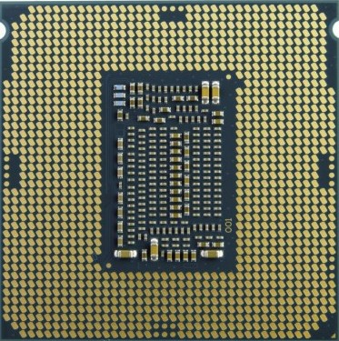
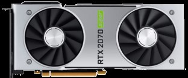
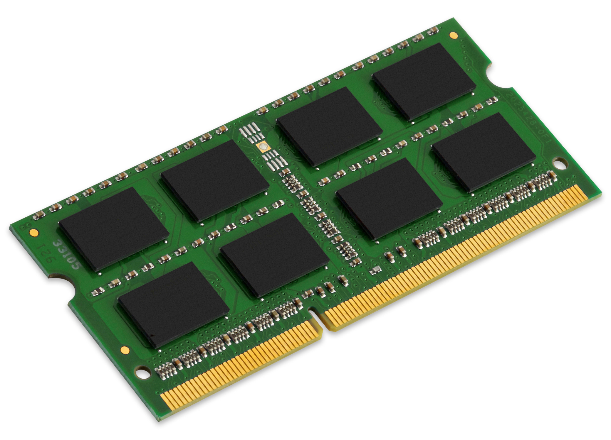
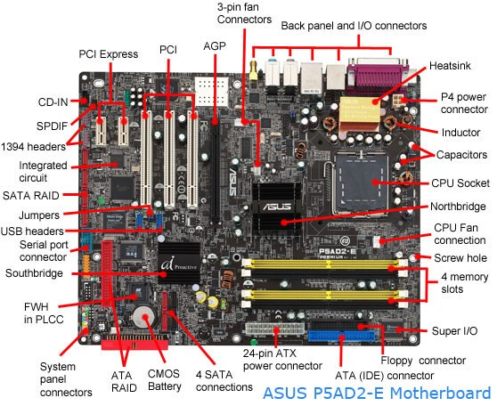
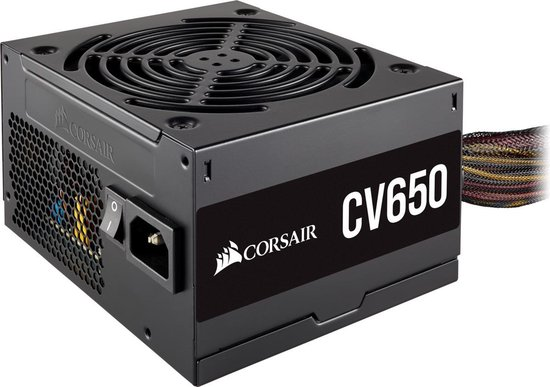

De CPU is als het ware de brein van het computer en werkt door middel van kleine ‘sockets’ op de chip die met een ‘peripheral input’, een input die door de muis of toetsenbord word door gegeven, een output geeft of aan het scherm of voert het uit. De CPU was oorspronkelijk gemaakt met hulp van Tedd Hoff bij Intel, tegenwoordig een van de grote CPU fabrikanten.
De GPU(Graphics Processing Unit) word gebruikt in situaties als gaming, 3d werk of tegenwoordig Deep Learning. De GPU neemt alle videotaken over van de CPU. Niet elke computer bevat een GPU, maar gebruikt “Integraded Graphics” dat is dat de GPU ophetzelfde chip of “die” als het CPU zit. Dat is kleiner, meer energie effiecent en minder duur dan een losse GPU. Over het algemeen zijn “Integrated Graphics” veel minder snel en word in grotere computers over het algemeen gekozen voor een losse GPU.
Memory is tijdelijke opslag van de computer en komt in vormen als RAM(Random Access Memory) of permant zoals ROM(Read-Only Memory). RAM wordt gebruikt bijvoorbeeld gebruikt in plaatsen zoals je in internet browser. Dan word je webpage in je RAM ingeladen. Het word gebruikt, omdat RAM heel snel is en om dat met iets als een harde schijf te vervangen zou het aanzienlijk vertragen. Ook is RAM non-volatile dat betekent dat bijvoorbeeld onder stroom verlies dat het zijn inhoud verliest in tegen deel tot een Hard Drive/Harde Schijf die onder stroom verlies wel zijn inhoud behoudt.
Een harde schijf of Hard Drive is als het ware een schotel met een metalen lakje die data opslaat met behulp van een arm die de data kan lezen en bewerken als de schotel draait. Het primaire idee van een Hard Drive is data opslaan.
Een SSD(Solid State Drive) heeft hetzelfde functie als een harde schijf. Een SSD gebruikt aan elkaar verbonden volatile-geheugen. Deze volatile geuheugen is anders dan bij een USB Thumb Drive want het is sneller en meer betrouwbaar. Omdat het produceren van de chips duurder is is de prijs van een SSD hoger, maar de snelheid is wel hoger.
Memory is tijdelijke opslag van de computer en komt in vormen als RAM(Random Access Memory) of permant zoals ROM(Read-Only Memory). RAM wordt gebruikt bijvoorbeeld gebruikt in plaatsen zoals je in internet browser. Dan word je webpage in je RAM ingeladen. Het word gebruikt, omdat RAM heel snel is en om dat met iets als een harde schijf te vervangen zou het aanzienlijk vertragen. Ook is RAM non-volatile dat betekent dat bijvoorbeeld onder stroom verlies dat het zijn inhoud verliest in tegen deel tot een Hard Drive/Harde Schijf die onder stroom verlies wel zijn inhoud behoudt.
Een Power Supply Unit (afgekort PSU) is een onderdeel van een computer die binnenkomende schomelende voltage in directe constante voltage. Ook veranderd de PSU de voltage omhoog en omlaag liggend aan de programma die geopend is. Te weinig stroom en de programma runt niet zoals hij hoort, te veel stroom kan schade brengen aan de componenten.
